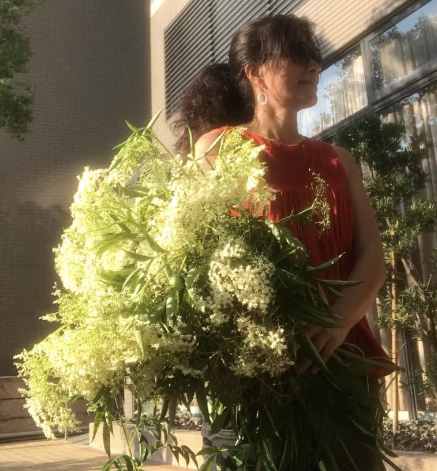
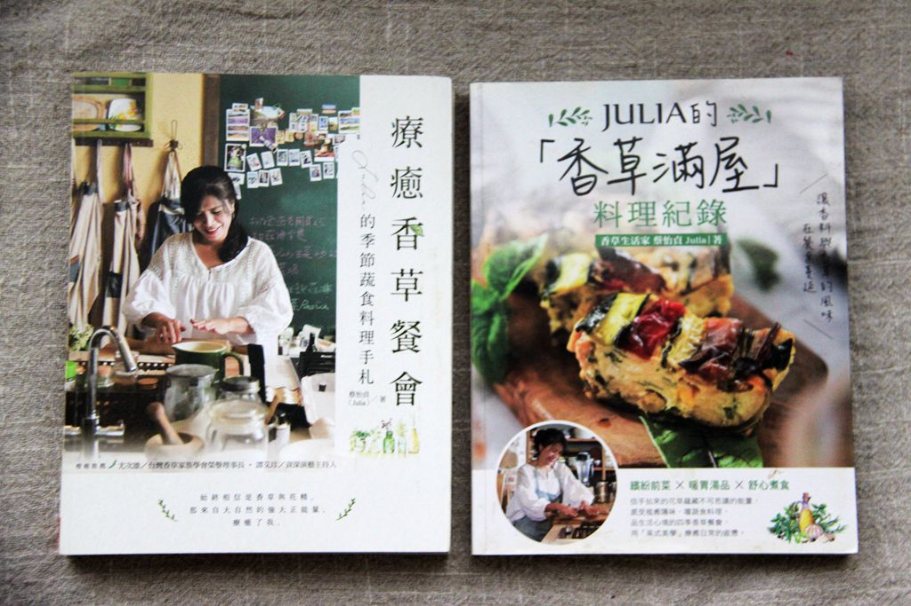
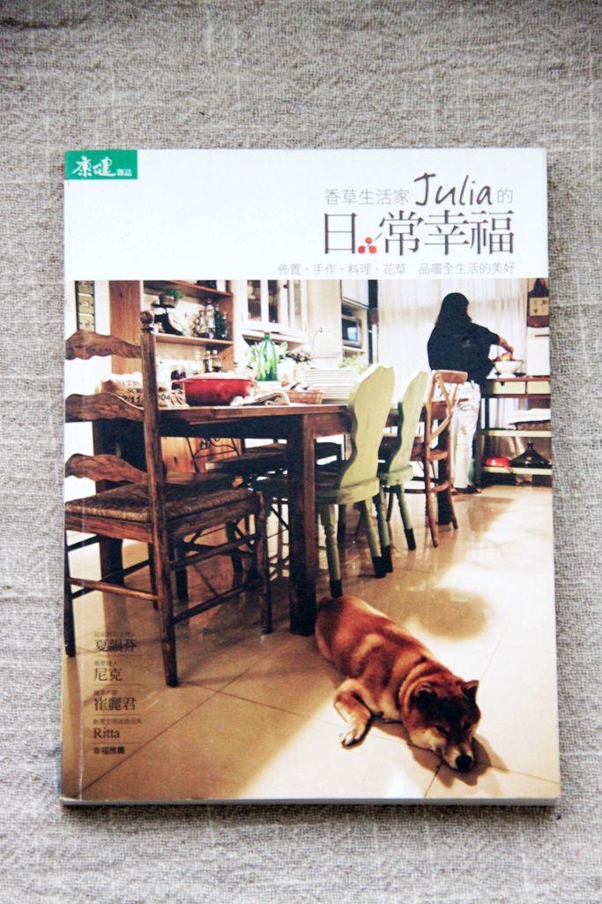
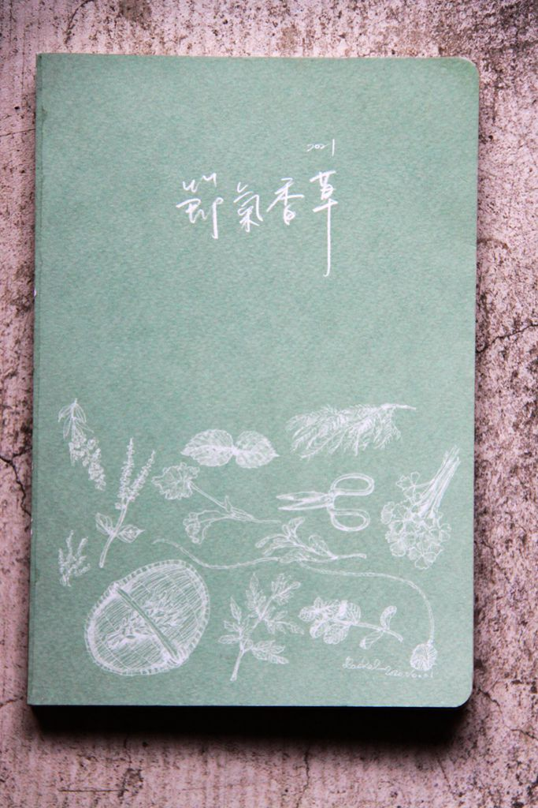
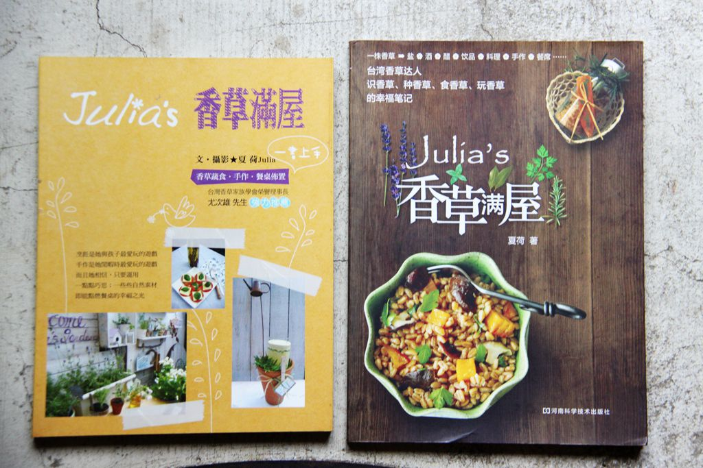
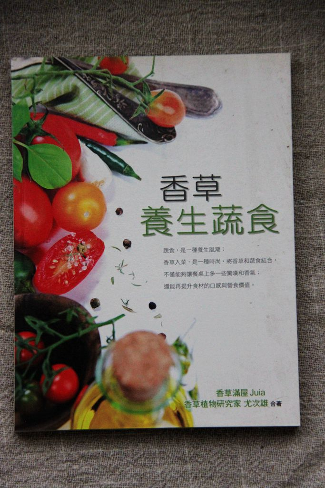
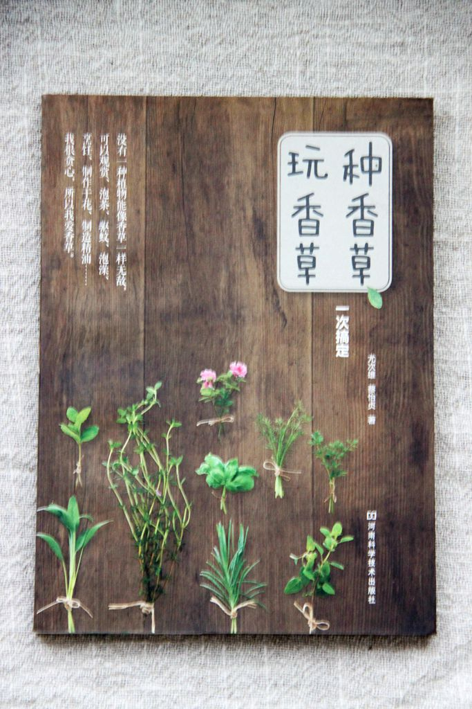

藉由種植、料理、旅行與書寫，親近大自然的節氣脈絡。期盼以此滋養豐潤身心，試著長成一棵根植大地的香草樹——讓行經之人走近，於樹蔭靜靜吹風喝茶；或三五熱鬧野餐，都好都好！閉目許願，願微風挾著飽滿芳香之息，落入人心。
近二十年來，持續研究西洋香藥草，分享香草入茶、入料理、融入手作香氛的居家生活運用。
「花火，是那種曾經以為熄了、其實正要最亮的意思。」
在第三人生——我稱之為第二青春期——開啟之際，透過獨自旅行與書寫，探索自己真正想要的生活，也想陪伴同齡的女性，把重心放回自己身上，重新活出自由而豐盛的人生。
二十年香草生活的文字紀錄

博客來 →Julia 的季節蔬食料理手札（2022年再版更名為《JULIA的「香草滿屋」料理紀錄》）

博客來 →Julia 的日常幸福

2021

文・攝影：夏荷 Julia，原始版

與尤次雄合著，2013

與尤次雄合著，臺視文化，2010
部分早期出版品通路連結尚待確認，之後有正確連結會再更新。